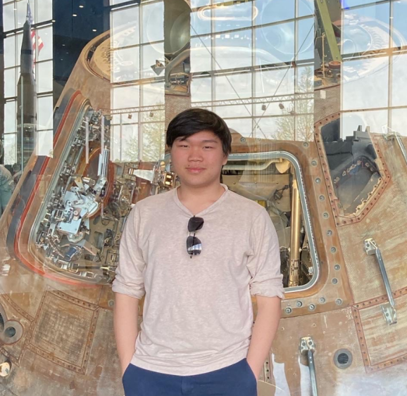
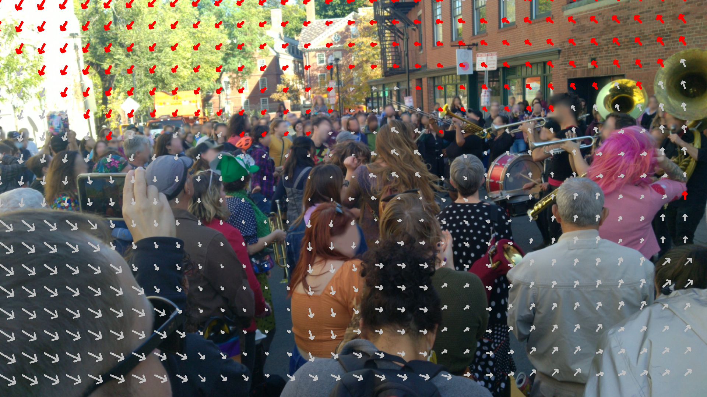
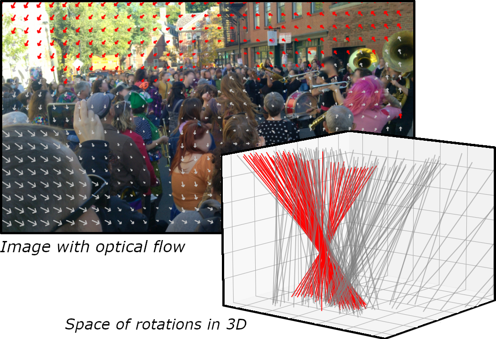

|
I'm currently a visiting researcher at the MIT Distributed Robotics Lab. I completed my Bachelor's in Computer Science with a minor in Mathematics at the University of Massachusetts Amherst, where I was a research assistant at the Computer Vision Lab under Prof. Erik Learned-Miller. My research interest lies at the intersection of computer vision, machine learning, and robotics. My goal is to bridge the gap between high-level cognition and low-level planning and control, with applications for autonomous vehicles. |
 |
|
My area of research interest is in autonomous vehicles, computer vision, machine learning, and robotics. |
|


|
International Conference on Computer Vision (ICCV), 2023 project page / poster / arXiv We introduce a novel generalization of the Hough transform on SO3 to efficiently find the camera rotation most compatible with the optical flow. We also provide a new dataset of 17 highly dynamic video sequences called BUsy Street Scenes (BUSS). |
|
|
| Sept. 2023, |
TA for CS326: Web Programming, UMass |
| May 2023, |
TA for CS240: Reasoning Under Uncertainty, UMass |
| Jan. 2023, |
TA for CS389: Machine Learning, UMass (Received distinguished TA award) |
|
Previously, I co-founded Stella Agritech to create technologies that enhance the efficiency of agriculture. I also led ISHCMC's sustainability program with Tanya Meftah, which was nominated by the European Chambers of Commerce for the Best Sustainable Business Initiative in Vietnam in 2019. I was also part of the UMass Rocket Team between 2021-2022. |
 |
UMass Aerospace and Rocket Team, NASA SLI 2022, Payload Software Engineer
Building the onboard flight inertial reference system (IRS) to continuously compute the launch vehicle's dead reckoning position in a GPS-denied environment with a 75 meter (250 ft) resolution |
|
|
Some inspiration from Jon Barron. |